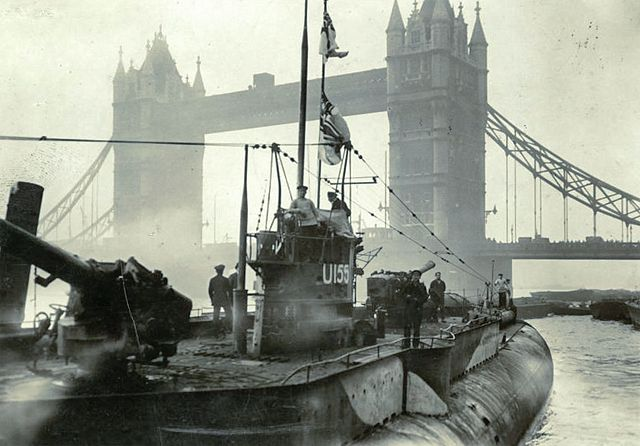

U-Boats
The German "Unterseeboot", or U-Boat, were submarines designed to float near the surface and were armed with mines, deck guns, and torpedoes. They played a large role in WWI and WWII engaging in acts of ship hunting and strategic attacks of enemy shipping lines.
